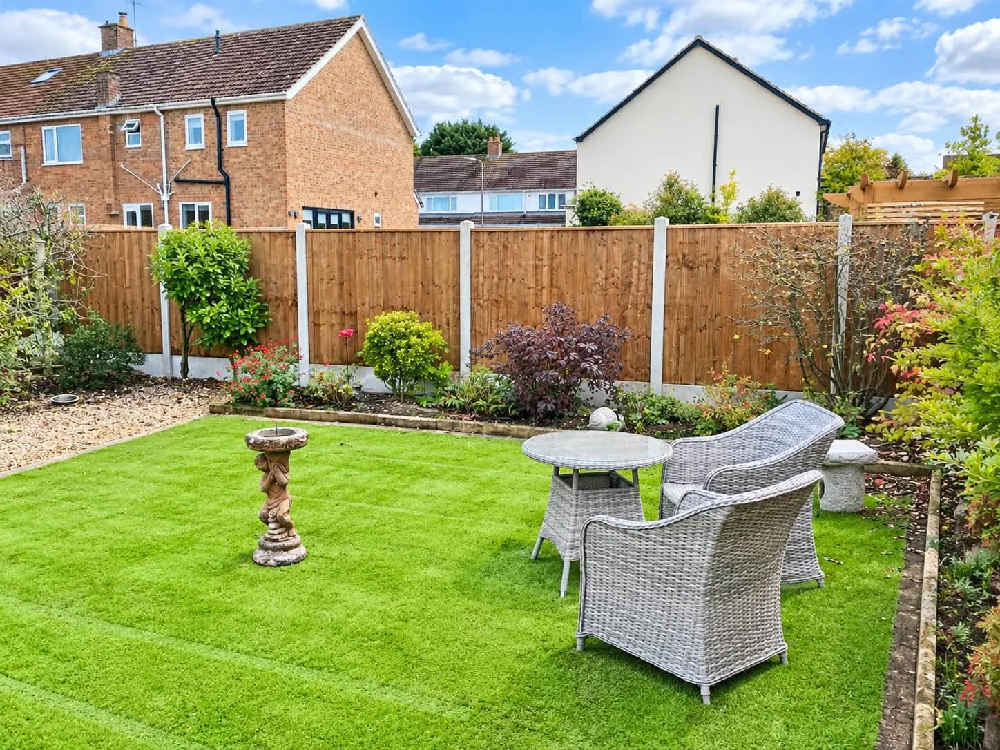
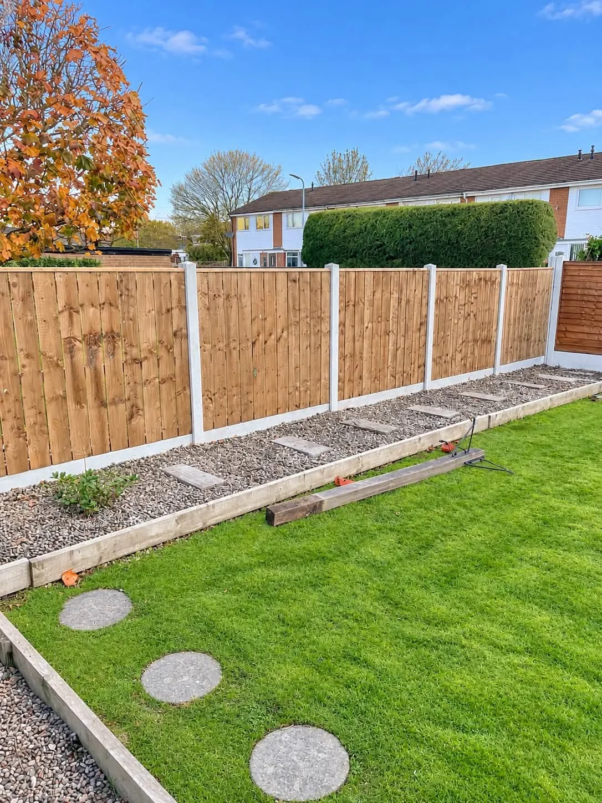
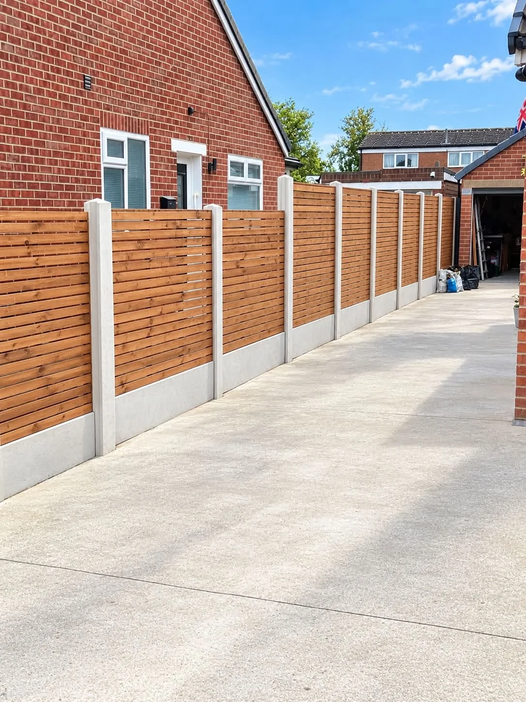
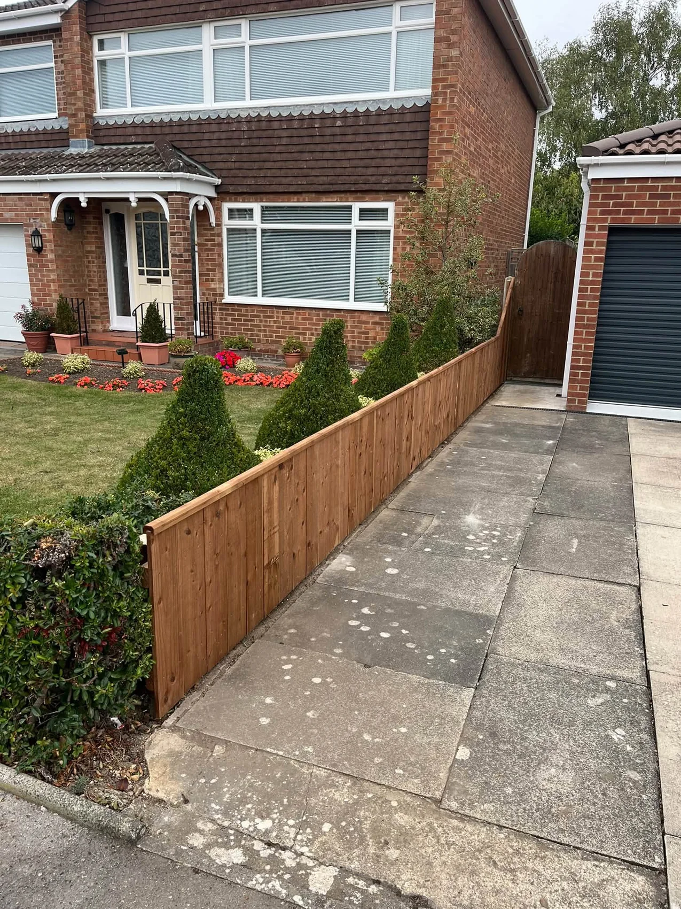

PRECISION FENCING · TEESSIDE
More privacy.
More garden.
Fencing and gates installed across Teesside and surrounding areas. Thoughtful details. A finish that belongs.
QUALITY · DURABILITY · PRIVACY
Your space.
Beautifully defined.
A good fence does more than mark the edge of your garden. It gives you privacy, frames your planting and brings the whole space together. Precision Fencing installs all fencing types across Teesside and surrounding areas.
Discuss your project →
FROM THE GATE TO THE GARDEN
A considered boundary.
From every angle.
Traditional timber, clean horizontal lines and practical access. Explore the materials and details in our own fencing projects.
View our recent work →

OUR WORK
Built with care. Finished with precision.
Our own fencing projects. Select a photograph to see it in full.
A CLOSER LOOK
Walk the boundary.
See the difference.
Two short films from our fencing projects. See the fence runs, finishing details and how each boundary sits in the garden.
Have a project in mind? →FENCE DAMAGE?
Restore the privacy.
Keep enjoying your garden.
Damaged panels or posts after strong winds? We can help replace the affected parts of your boundary. Send your photographs and postcode to start the conversation.
Discuss your project →
BEFORE WE BEGIN
Your fencing questions.
Where do you work?
We install fencing across Teesside and surrounding areas. Send your postcode so we can confirm coverage for your project.
Can you replace damaged panels and posts?
Yes. We fit replacement panels and posts after fence damage. Send photographs and a description of what has happened.
What types of fencing can I ask about?
We install all fencing types. The photographs here include closeboard timber, horizontal slatted fencing, gates, and panels with concrete posts and gravel boards.
What do you need for an enquiry?
Your postcode, approximate measurements, a description of the work and photographs are a useful starting point. Attach photos in WhatsApp before sending your message.
LET’S TALK FENCING
A better boundary
starts here.
Send your postcode, a few measurements and a short description of what you need. Photos of the existing boundary are useful too.
Send us your project on WhatsApp →
The form prepares a WhatsApp draft. Review the details, add your photos in WhatsApp and send when you’re ready.